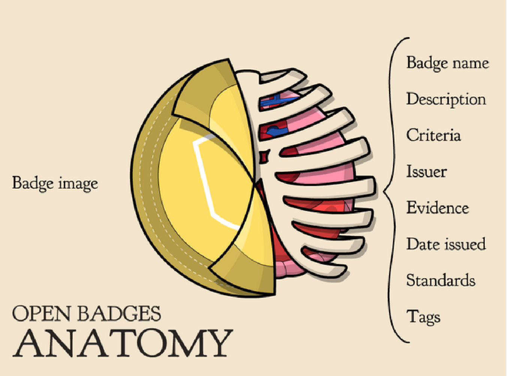

Por que as empresas devem ficar atentas a essa nova forma de gerar certificados e reconhecimentos
Por vezes, quando procuramos um curso profissionalizante miramos naqueles que possuem certificados para termos um registro da habilidade recém aprendida.
Desde 2011, a Mozilla vem trabalhando em uma outra forma de reconhecer habilidades não certificadas: os Open Badges.
Existem diversas páginas oficiais com muitas informações sobre eles. O intuito desse artigo é apenas fazer uma introdução sobre o assunto (e conquistar esse badge aqui).
O que são
Open Bagdes são registros digitais cedidos por certificadores a alguém certificado, após cumprir critérios/pré-requisitos.
Anatomia

Fonte: https://wiki.mozilla.org/Badges/FAQs
Todo badge possui metadados.
Alguns desse dados são obrigatórios (nome e critério, por exemplo) e outros são opcionais
(padrões e tags). A quantidade de informação pode ser imensa, mas a partir do momento
em que esse badge for emitido, nenhuma informação sobre ele poderá ser alterada.
Digital badges x Open badges
De forma simples: um digital badge pode ser uma mera representação. Algo que pode ou não ser verdade, dependendo de quem estiver o usando.
Um open badge é uma certificação de que você tornou evidente uma habilidade, um interesse ou uma conquista perante a uma organização credenciada.
O fato de ter uma entidade garantindo aquilo que você está falando ter é que faz toda a diferença.
Características
Características Apresento quatro características dos OBs:
-
São digitais, livres e abertos. Sua tecnologia (software e especificações técnicas) pode ser utilizadas por quaisquer organizações, empresas e profissionais. Elas podem criar, certificar e verificar quaisquer badges. Basta que o futuro certificador venha ser autorizado após seguir alguns passos. Já há diversos certificadores.
-
Podem ser agrupados de diversas formas para fazerem ainda mais sentido. Tanto individualmente quanto em grupos, eles podem ser apresentados em redes sociais e portais de emprego, por exemplo, para mostrar suas habilidades.
-
Podem (e devem) ser acumulados. Mesmo que seja sobre um mesmo assunto ou de um mesmo certificador, todos podem ter quantos certificados quiserem para melhor contar a história sobre determinada habilidade ou conhecimento.
-
São baseados em evidências. Diferente de alguns certificados que precisam apenas de presença para serem expedidos, os open badges só são concedidos mediante a apresentação de evidências. Como são cedidos por referências em suas áreas e mediante a evidências, possuir um open badge passa a ter grande valor.
Como pode ser usado
Como pode ser usado Um dos principais usos dos open badges é poder mesclar em uma mesma mochila conhecimentos técnicos (como por exemplo uso da suíte Office da Microsoft) e competências transversais/comportamentais/pessoais. (liderança, trabalho em grupo, etiqueta etc).
Cenário
Empresa que contratará novo funcionário e possui três candidatos com certificações muito semelhantes. No entanto, um deles possui open badges relacionados a planejamento, liderança e trabalho em grupo. Esse candidato levará vantagem sobre os outros.
Outra cenário: uma empresa quer registrar a evolução interna de seus funcionários em relação a um determinado produto. Os open badges podem ser concedidos internamente de forma a marcar aqueles que estão em níveis mais avançados.
Futuro
Apesar de já conhecer os OBs há aproximadamente 3 anos, somente este ano após uma palestra na Affero Lab, é que eles se mostraram fantásticos. Graças a palestra de Lana Ramôa e Jefferson Rodrigues, pude ver com maior clareza as profundas mudanças que poderão acontecer na Educação e também dentro da própria Affero Lab.
Na educação, existe a possibilidade de incluir todo o conteúdo aprendido por meio de vídeos no YouTube, por exemplo.
Na Affero Lab, durante essa mesma palestra, foi levantada a possibilidade de serem criados open badges relacionados a proficiência dos colaboradores no QuickLessons, produto no qual estou atuando.
Será interessante marcar a evolução de todos no QL. Tornará mais fácil a identificação daqueles que podem disseminar o conhecimento e aqueles que precisam de mais treinamento.
Todos sairão ganhando.
Endereços consultados em 14 de março de 2016: